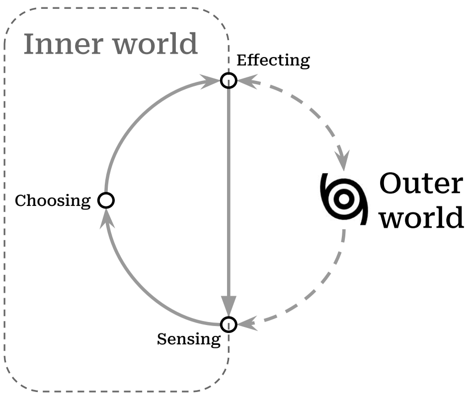

The days revolve. I awake again into myself. I walk the familiar orbit of habits and tensions tracing back to my childhood. To my parents, to their childhoods. And so on. Life is a circle.
The days slip away. I will never see yesterday again, and I’m continually tiptoe on the verge of an undiscovered moment. Life is a line.
Circle, line: these are partial figures we’ve often fused together to depict our experience, since neither seems adequate by itself. Change is possible, but the new grows from the old. Each adult is formed from the body of a child. Tomorrow I will still be me, but I can unlock the closed cycle of my habits and choose what is good. Recognizable, but transformed. Life is a spiral.
Preparing myself, I shuffle the small deck of questions I’ve nearly worn out with partial answers: Who am I? What do I want to become? How do I change myself? There’s no reason to listen to my slow rehearsal, except that the answers are not mine: they’re a playlist of other, lovely voices.
“I am a little world made cunningly / Of elements and an angelic sprite” writes John Donne,1 gesturing toward our smallness and our vastness, our physicality and what is intangible in us. Even that intangible part of us seems to be composed of reflections: 2 though there is one reality, we each walk around in our “own worlds” and participate in each others’ “worlds”.
In A Foray into the Worlds of Animals and Humans, Jakob von Uexküll (n.d.) describes how the internal world of any organism, including humans, is made up. He names this subjective world an Umwelt (surroundworld) since it is focused outward, created and reshaped by each of us when we interact with reality. This cycle shows how it works in action:

The beauty of the Umwelt model is that it explains a lot, and simply. It pares down the bewildering array of experience into two realms: inside of me, and outside of me. In it, all experiences are shown as pathways between the inner world and outer reality: the narrow routes by which we sense the outer world (coming in), and by which we affect it (going out).
This cycle weaving together inner and outer worlds depicts a dance that has been engaged by philosophies and religions across cultures and ages: Atman and Brahman3, the knower and the known, I and Thou (Buber and Ronald Gregor Smith 2000), the individual soul and the Empyrean.
See Holy Sonnet 5↩︎
As one of Donne’s contemporaries notes, the “mind a mirror is of heavenly sights, / A brief wherein all marvels summed lie”. See Look Home by Robert Southwell.↩︎
अयम् आत्मा ब्रह्म ayam ātmā brahma, roughly translated “the self is connected to the deep foundation of reality”, from the Brihadaranyaka Upanishad 4.4.5. The Upanishads also include the notion that all creatures are connected to this deep foundation, (सर्वं खल्विदं ब्रह्म, sarvam khalvidam brahma), see Chandogya Upanishad 3.14.1↩︎